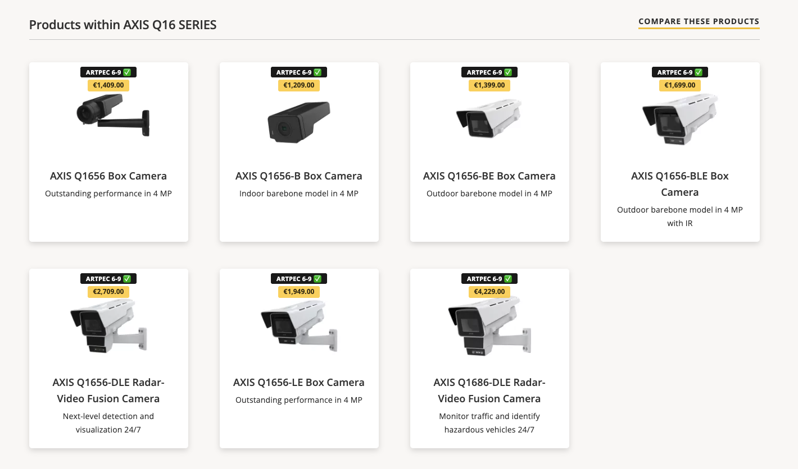
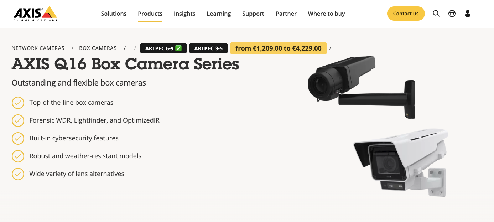
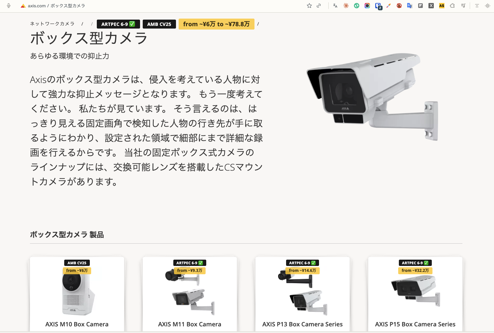
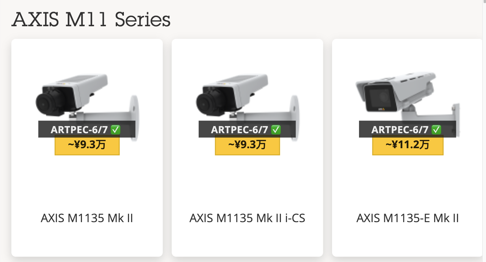
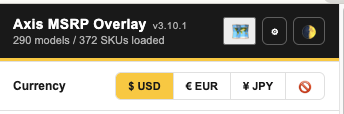
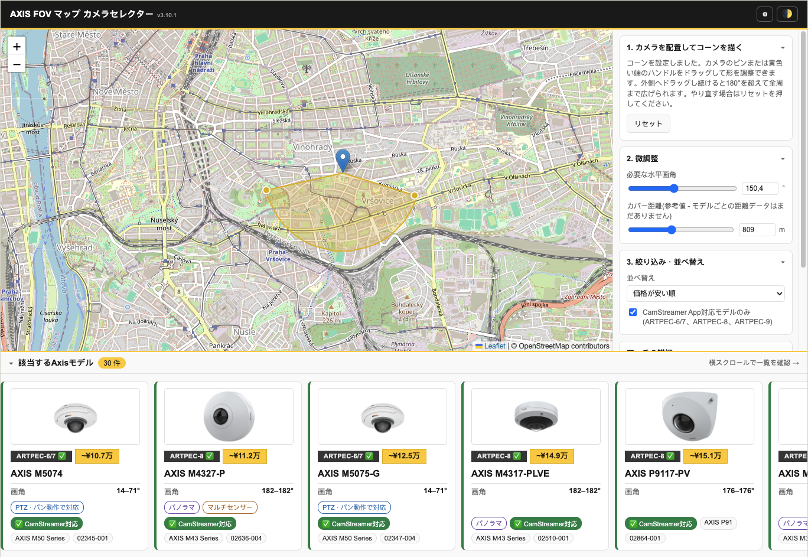

Every axis.com surface,
one shared price catalog
Product Selector, search, product/category pages, and Compare Products tables — everything updates live, no page reload when you flip currency, refresh chipset data, or touch the chipset filter.

Inline MSRP + chipset badges
Every recognized product tile gets a yellow price badge — hover for the Axis part number — plus a chipset label where CamStreamer has data, with a checkmark for CamStreamer Support.

Three-currency toggle + lookup from the toolbar
One click switches € EUR / $ USD / ¥ JPY everywhere at once. EUR is the one "final" list-price figure; USD and JPY are always FX-derived approximations, so they're marked with a leading ~ and JPY is shown in shortened 万 (man) units — e.g. ~¥37.3万 instead of a six-digit yen figure. First-run currency defaults to your locale (JPY for Japanese locales, USD for the Americas, EUR everywhere else) until you pick one yourself. Search the full catalog by model name or part number, on any page, and toggle light/dark theme from the same header.

Multi-select chipset filter + field-of-view slider
ARTPEC-9 / -8 / -6-7 / older / Ambarella, all at once — unlike the site's single-select dropdown. One click on CamStreamer Support selects every chipset family the apps actually run on. The same floating panel on the Product Selector also has a minimum field-of-view slider, so you can rule out cameras whose published FOV doesn't reach wide enough for the shot — models with no FOV data yet simply stay visible rather than disappearing.
Badges on axis.com search too
Search for a model (M1137) or a whole series (Q35) — titles get an exact price, a variant range, or a "from €X" badge.

Product and category pages, badged too
Every model tile on a hub page (Box cameras) or series page gets a top-of-card price + chipset badge — a specific price for one model, or a "from €X" range for a whole series card — without ever covering the site's own captions.

Series price range in the breadcrumb, plus Compare Products rows
A series page's breadcrumb trail gets the full price range and every chipset used across the series in one glance. Open the Compare Products table on the same page and it gains two new rows at the top — Chipset and Price — one column per model.

Works on every axis.com locale — including Japanese
Badges are placed by CSS class and URL slug, never by matching English text, so a fully translated page like ボックス型カメラ gets the same breadcrumb range and card badges as its English twin. On first run the currency follows the locale you're browsing — JPY on Japanese pages, USD in the Americas, EUR everywhere else — and picking a currency yourself overrides it for good.

Yen in 万 units, not six digits
Yen figures are rounded up to the nearest ¥1,000 and written in shortened 万 (man) units — ~¥9.3万 rather than ¥93,000 — so a price badge stays the same size in every currency. The leading ~ is a reminder that yen is converted live from the EUR list price at the latest ECB reference rate, not quoted from a published Japanese price list. Switching to ¥ JPY also swaps the popup's disclaimer to Japanese.

Or hide every price, and keep the rest
A fourth 🚫 option in the same currency row switches prices off across the whole extension — Product Selector badges, search results, product and category pages, the series breadcrumb, both comparison tables, the popup list and the map tool. Chipset badges, the chipset filter and the field-of-view tools all keep working untouched, so it stays a full camera-picking tool for anyone who simply doesn't deal with pricing. Cheapest-first sorting still works too, since it reveals no numbers.

Fully Japanese, when it should be
Every surface — popup, price-update page, the map tool and every badge and tooltip injected into axis.com — switches to Japanese whenever any one of three things is true: ¥ JPY is the selected currency, the browser's own UI language is Japanese, or you're on the /ja-jp/ locale of axis.com. There's no separate language switch to remember, and it flips live on already-open tabs. Product names, model numbers and terms like ARTPEC and CamStreamer stay in roman script, the way Japanese technical UI normally treats them.